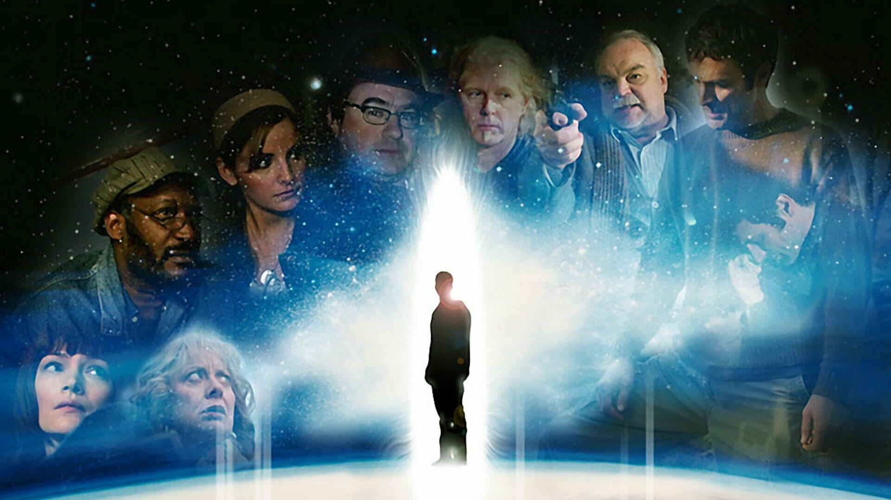
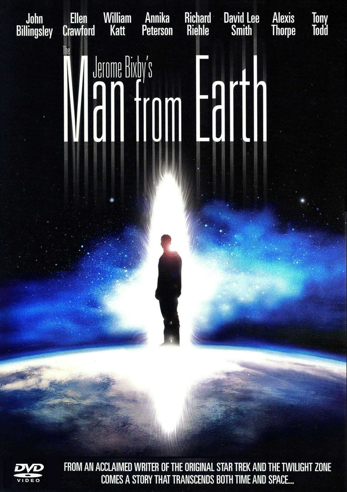
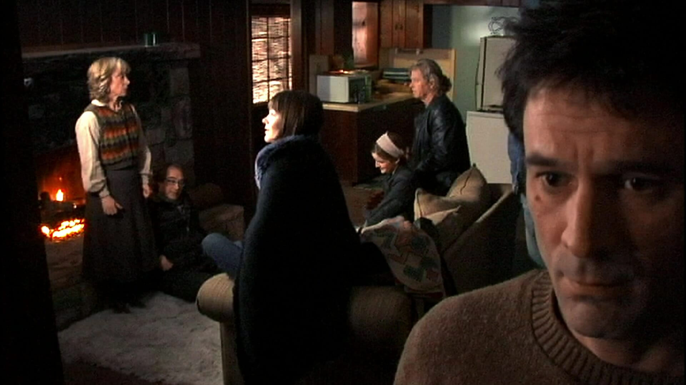
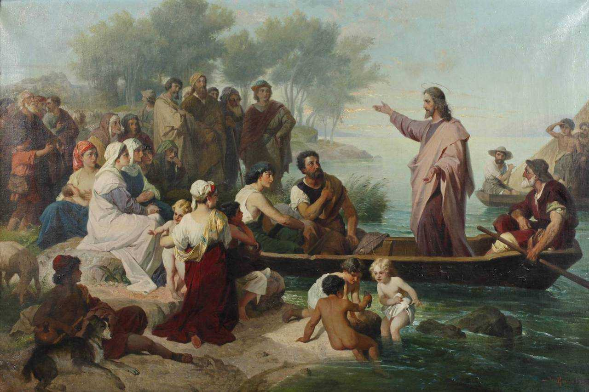
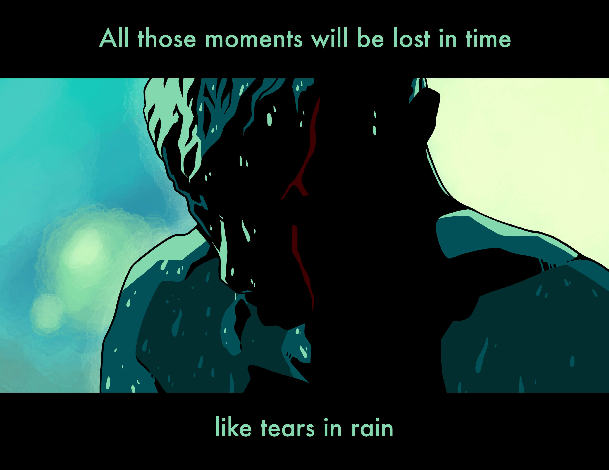

历史的真相往往平淡无奇。
周末终于看了这部在硬盘里躺了多年的高分电影，收获一份平静的震撼。一众影友的各种争论精彩纷呈，虽然这部预算仅 20 万美元的小制作存在一些纰漏和穿帮，却无伤大雅，其中蕴含的哲思才是其值得回味的缘由。

一部分影友认为The Man from Earth应该译作“来自洞穴的男人”，理由是 earth 指代地球时，应该加定冠词 the。持两种观点的同学谁也说服不了谁，一向不和稀泥的我则认为：翻译成“来自大地的男人”更贴切。从语法上讲，Earth 等同于 the earth，但由于标题的非冠词首字母大写习惯，很难说这里的 Earth 本身到底有没有首字母大写，这可能又是编剧玩的文字游戏，就像男主角的姓，Oldman，既是古老的姓氏奥尔德曼，也是老头儿的意思。类似的文字游戏还有几处，因此片名中的 earth 到底是地球还是洞穴亦或是土地，可能也是如此。之所以很多人认为不该翻译成“地球”，是因为本片并未提及外星文明，角色一水儿的地球人，专门强调主角来自地球似乎脱裤放屁。但剧中所有提及“穴居人”的台词都是 caveman，为什么不叫 The Man from Cave（这个男人来自洞穴）呢？然而，根据男主对于自己过往经历的描述，他所经历的人和事基本都集中在陆地上，从冰河时期的欧洲到佛陀时代的印度，而对大海，虽有提及，但非重点，因此我个人觉得，“来自大地的男人”更合宜。
不纠结翻译问题了，毕竟老美不像英国人那样在语法上可丁可卯。另一个比较大的争议是本片是否是一部优秀的科幻电影。我觉得这个争议的出发点就错了——这本来就不是一部科幻电影。全剧没有任何科幻场景，目前也没有能够支撑哺乳动物自然寿命突破一万年的生物学理论基础。约翰没有任何特异功能，他说他的“本事”不是刀枪不入，只是时间多。约翰的时间多到他是整个人类文明史的参与者和见证人，因此我认为这应该归为一部存在主义哲学电影，如果一定要套用一个通俗点儿的类型，那也是奇幻文艺电影，跟科幻没什么关系，IMDB上的标签也只有 Drama(戏剧)、Fantasy（幻想）和 Mystery（神秘），并无 Sci-Fi（科幻）。

历史教授 John Oldman（约翰·奥尔德曼）出生于 14000 年前的马格德林时期。由于他看上去永远 35 岁的冻龄，为了避免周围的人起疑心，每 10 年他都不得不挪个地方、换个身份继续生活下去，因此也可以看作他在这个世界上已经轮回了上千次。但这并不是宗教意义上的轮回，毕竟他的生命从未终结或转世，而是像灯塔水母一样，细胞具备超强的修复和再生能力（正如他多次提到受伤之后皮肤不会留下疤痕）。正是经历了太多不得已的离别，与其说被 Edith（伊迪丝）那句“十年来丝毫不见老”触动了内心，不如说是他厌倦了这样的周而复始，才临时起意，向大家吐露他的秘密。
全剧围绕约翰离奇的生理特性，探讨的核心其实是世人对于历史的偏见。比如，现代人很难接受一个史前洞穴人活在当下却不是茹毛饮血的野人形象。一万年对于人类个体而言固然遥不可及，对物种进化来说却过于短促。始终保持与时俱进的约翰，从石器时代到公元纪年，从中世纪再到信息时代，每一个十年他都努力扮演好自己应该而不是本来的模样。他是人类文明史上很多重要事件的亲历者，也见证了后人们对历史的神化和演义。在医科学生打电话询问历史成绩时，他善意地把 D 说成了 C+，给朋友的解释是不明白学医的为什么要考历史，我觉得内心的潜台词则是他认为反正你们所谓的历史都是“孩子们”瞎编的，又何必当真？

类似的观点也体现在对不同版本《圣经》权威性的争论上。无论大家认为哪个版本更正统，作为耶稣本人的约翰给出的解释却是：他为了寻找更暖和的地方一路向东，来到古印度，师从释迦牟尼，500 年后在中东以“现代的形式”传播佛陀的教诲，却被罗马人当作异见人士镇压。约翰说罗马人只是把他绑在十字架上，他利用在印度学到的方法降低新陈代谢让自己处于假死状态，所以追随者将他葬于山洞后得以恢复体征、苏醒过来，在世人眼里，这就是复活。罗马人并没有把他钉在十字架上，但是“钉子和鲜血能使宗教艺术更加迷人”。因此我认为那句“The truth is so so simple”（事实其实非常非常简单）应该是编剧最想表达的观点。
从目睹冰川融化将英吉利与法兰西分隔开，到游走于加利利海边谆谆布道；从担心船队会从世界的边缘跌落而放弃跟哥伦布一同探险，到与梵高谈笑风生……这样传奇的经历借由平缓的语调叙述出来，让我想起了《银翼杀手》里那段经典的“雨中泪”独白。

一万四千年的沧海桑田，约翰得出一个结论：家乡是回不去的（You can’t go home again）。这句话与古希腊哲学家赫拉克利特的名言“人不能两次走进同一条河流”异曲同工。别说一万年了，就是短短的二十年，谁又敢说现在的家乡还是原先的模样？
其实这部电影里的观点和论述，并没有特别新奇或者脑洞大开的，基本上咱们自己或多或少都琢磨过。只不过编剧巧妙地用一个人的经历，将这些观点自然地串在一起，以闲聊的形式娓娓道来，便较“历史就是个任人打扮的小姑娘”这类单薄的说教有意思得多。除去自然流畅的表演，剧中大量细节都处理得非常周全细腻，影友们围绕这些细节展开的讨论也颇有意味。诚如开篇所说，虽有些许纰漏，终归无伤大雅，总得来说是一部值得品味的好电影！